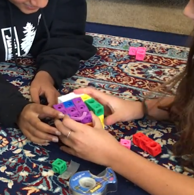
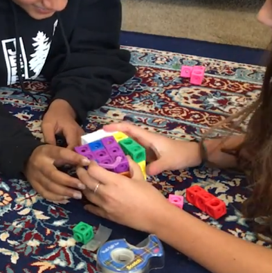

Introduction
In the Fall of 2019, with the guidance of Professor Dor Abrahamson, head of the Embodied Design Research Laboratory (EDRL) at UC Berkeley, I completed a thesis paper over the course of the concluding year of my bachelor’s studies in Cognitive Science. Using a task-based clinical-
interview instrument, this design-based research project explored students’ challenges and opportunities with 2d–3d content, specifically with orthographic projection drawings. In recognition of this work, I graduate from the department with High Honors. If you would like to read the complete paper, "The function of 2-Dimensional Representations in the Construction of 3-Dimensional Solids", the PDF is below.
Abstract
This project uses design-based research methods to look at the challenges middle school age students face when they are asked to create three-dimensional (3d) models from their corresponding orthographic projections. This research looked to understand what knowledge is explicitly gained in orthographic projections and what is hidden in the semiotic structure of this two-dimensional (2d) representation. Using a guided interview, two sixth grade girls were tasked to find meaning in orthographic projection drawings - this project hopes to discover where in this mental translation do students discover meaning or reach cognitive impasses. The findings imply that unit measurements and continuous surfaces are easy to recognize from simple observation, but through features and offset planes need prior knowledge in order to grasp the full meaning behind a set of orthographic projections.


 
